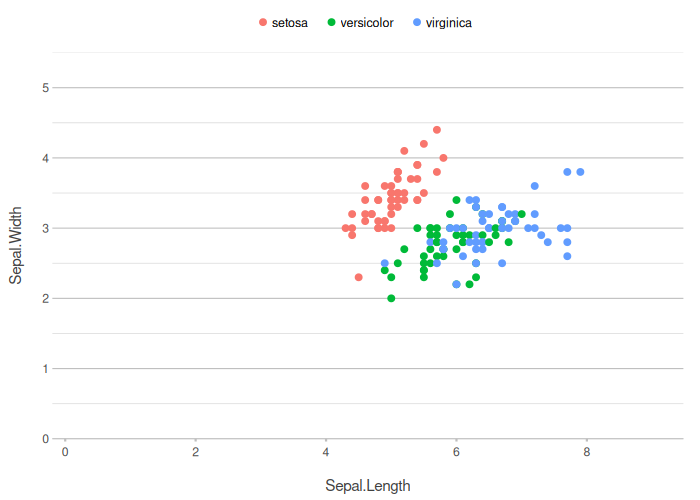
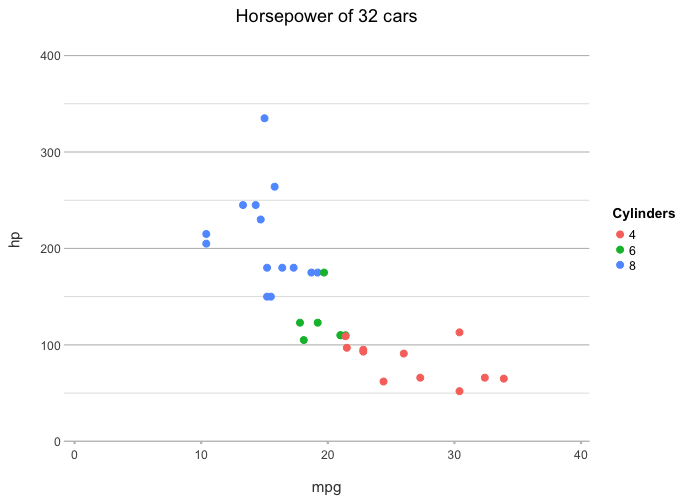
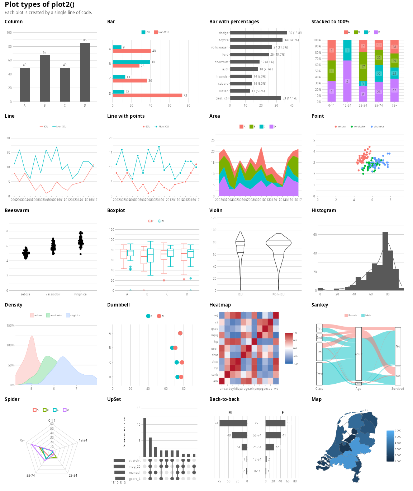
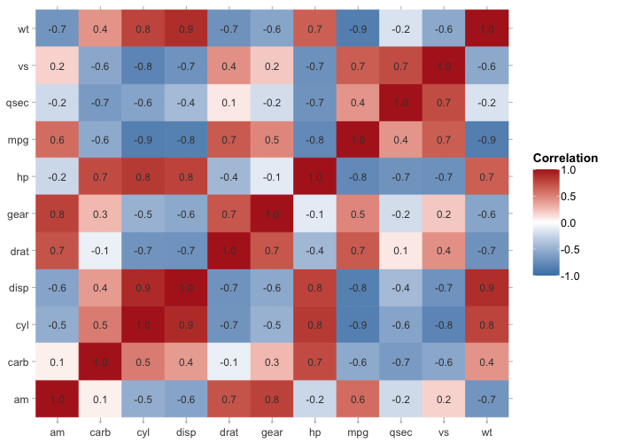
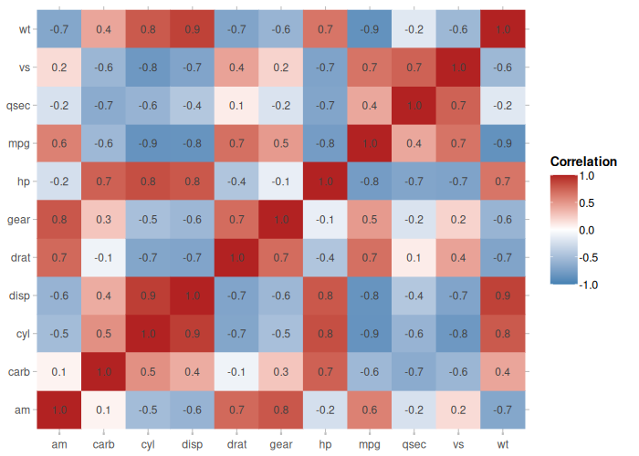
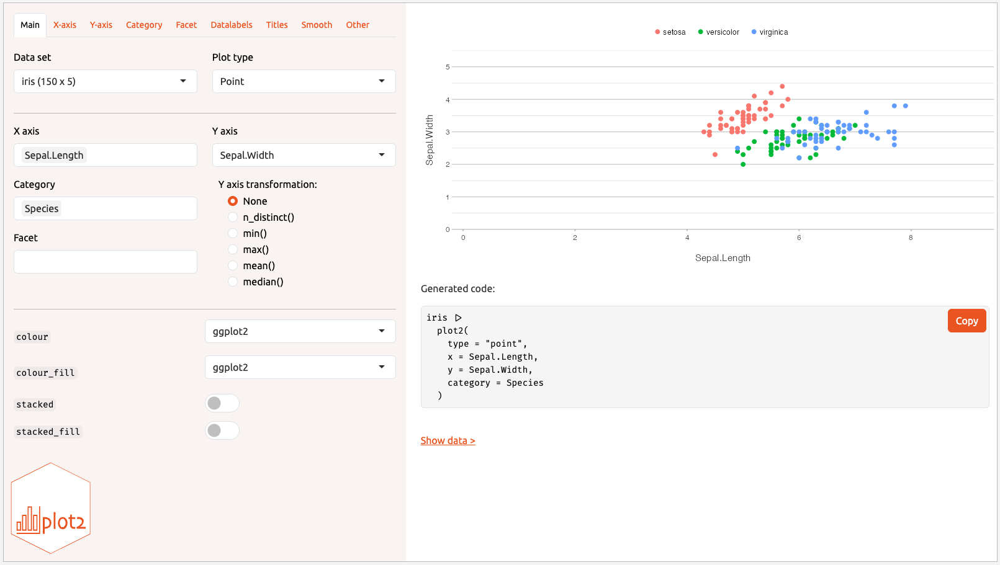

ggplot2 composes any plot from layers, aesthetics, scales, coordinates and themes. This grammar makes it flexible and precise, but it also means that a plot often requires many functions and arguments: a plot of “counts per department, coloured by year” requires knowledge of geom_col(), aes(fill = ), position_dodge(), scale_fill_*() and theme(), and of the data steps that come before them.
plot2 takes the opposite approach. Like base R’s plot(), one call gives a complete plot, even when the type of plot is not given. You describe what you want to see, and plot2() summarises, sorts and labels the data, and chooses the plot type, colours, axes and theme:

The result is a standard ggplot object, so every ggplot2 function and extension still works on it.
Installation
plot2 is not on CRAN yet. Install it from r-universe:
install.packages("plot2", repos = c("https://msberends.r-universe.dev",
"https://cloud.r-project.org"))The same plot, two ways
A sorted column plot of the number of cars per class, with data labels. The data set mpg comes with ggplot2.
# ggplot2, dplyr and forcats
library(ggplot2)
library(dplyr)
library(forcats)
mpg |>
count(class) |>
mutate(class = fct_reorder(class, n)) |>
ggplot(aes(x = class, y = n)) +
geom_col(width = 0.6) +
geom_text(aes(label = n), vjust = -0.5, size = 3.5) +
scale_y_continuous(expand = expansion(mult = c(0, 0.15))) +
labs(x = "Vehicle class", y = "Count") +
theme_minimal()
Both give a sorted column plot with data labels. plot2() sets the axis titles, the theme and the axis expansion by itself.
What plot2 replaces
| Task | ggplot2 | plot2 |
|---|---|---|
| Summarise, then plot |
group_by() + summarise() + ggplot() + geom_col()
|
plot2(x = a, y = mean(b)) |
| Sort bars | mutate(fct_reorder(...)) |
x.sort = "freq-desc" |
| Group by colour |
aes(fill = var) for bars, aes(colour = var) for points, each with its own scale_*()
|
category = var |
| Set colours |
scale_fill_manual(values = ...) or scale_colour_manual(values = ...), depending on the geom |
colour = c(...) |
| Facet | + facet_wrap(~var) |
facet = var |
| Data labels | + geom_text(aes(label = ...), vjust = ...) |
automatic for columns |
| Stacked bars |
geom_col(position = "stack") or position = "fill"
|
stacked = TRUE or stacked_fill = TRUE
|
Plot types
plot2() supports all ggplot2 geoms, and adds plot types such as dumbbell, back-to-back, Sankey, spider and UpSet plots. Each plot below is made with a single line of code:

Examples
The four plotting directions x, y, category and facet describe most plots. They accept columns and calculations:
admitted_patients |>
plot2(x = age_group, y = n(), category = gender, facet = ward)
#> Using free y scales per facet since the two y scales differ by 25% or more (use facet.fixed_y = TRUE for the same scale in all facets)
Titles can be calculated from the data as well:
mtcars |>
plot2(x = mpg,
y = hp,
category = factor(cyl),
category.title = "Cylinders",
title = paste("Horsepower of", n(), "cars"))
#> Using type = "point" since both axes are numeric
A correlation matrix becomes a heatmap:
mtcars |>
cor() |>
plot2(datalabels = TRUE,
colour = c("steelblue", "white", "firebrick"),
category.title = "Correlation")
#> Assuming type = "tile" since the matrix contains identical row and column names
#> Using category.midpoint = 0 (the current category scale centre)
Learning more
-
Introduction to plot2 (
vignette("plot2", package = "plot2")) describes the main ideas. -
Plot types (
vignette("supported_types", package = "plot2")) shows every plot type. - The package website has articles on colours and themes, maps, fonts, and
plot2()forggplot2users.
create_interactively() opens a Shiny app that builds a plot from a point-and-click interface and shows the code:
iris |> create_interactively()
Contributing
Issues, feature requests and pull requests are welcome at https://github.com/msberends/plot2.